HELLO / 你好
Hi，我是何皓天
新闻传播学硕士 · 全媒体内容创作者
个人理念 · 用真实记录现场，用数据讲好故事
暨南大学传播学硕士（保研录取），本科专业第一，辅修经济学学位。主攻深度调研、数据新闻与政务工作，兼具体制内与媒体多元实战经历。
继续下滑，探索更多
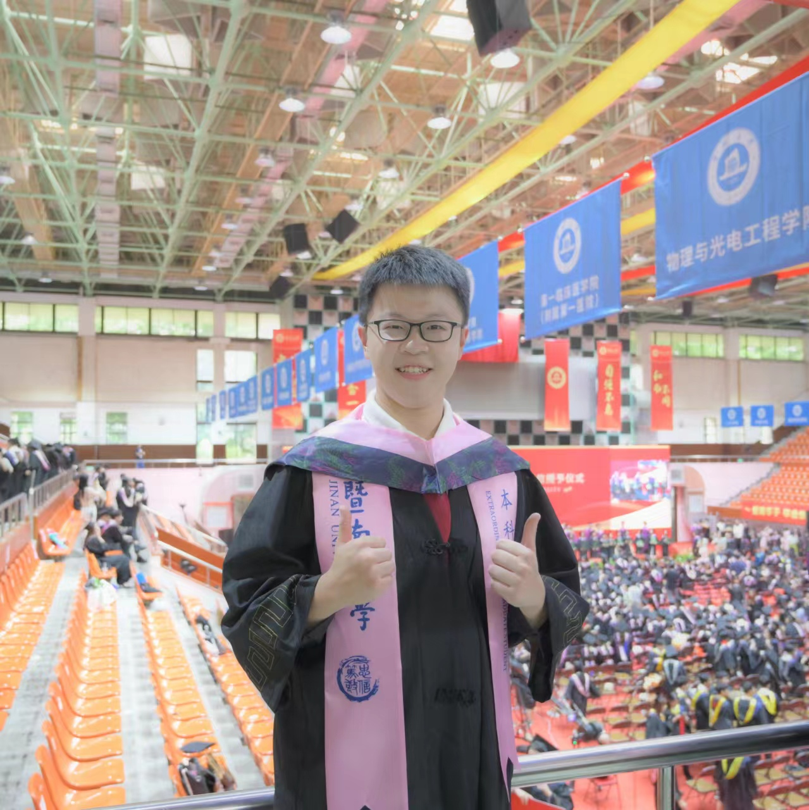
NOW
暨南大学 · 硕士在读
五大板块
从校园到一线，从纸面到镜头，这是我的完整成长记录。
EDUCATION
我的学习轨迹
从播音主持到经济学，再到传播学硕士，一路保持热爱与专注，不断拓展认知边界。
硕士 · 保研录取
2024.09 — 至今
暨南大学 · 新闻与传播学院
传播学 · 学硕
- 绩点 4.1 / 5.0，2024、2025 年度优秀党员，获二等奖奖学金
- 担任研究生第二党支部副书记，统筹支部组织建设与党建宣传
本科 · 双学位
2020.09 — 2024.07
暨南大学 · 新闻与传播学院
播音与主持艺术（主修） + 经济学（辅修）
- 绩点 4.09 / 5.0，主修专业第一
- 获评本科优异学生、优秀学生、优秀共青团员、优秀学生骨干
STUDENT WORK学生工作
COURSES主修课程亮点
专业实践
数据挖掘与可视化95
电视摄像95
口语表达实务96
出镜记者现场报道90
理论方法
质化研究方法96
量化研究方法96
网络与新媒体研究95
公共关系学92
经济拓展
经济学96
证券投资学96
经济研究方法与写作94
计量经济学90
INTERNSHIP
我在过往做过什么
从央媒一线到人大机关，再到基层政务窗口，3 段实习构筑“媒体 + 政务”双线能力。
01
新华社浙江分社
2023/10 – 2024/02
政文采访部 · 全媒体记者
- 政文报道采写：参与浙江省领导参考及舆论监督报道采写，完成第十八届中国戏剧节、浙江金融服务农业农村共同富裕联合体会议、“加强涉外法制建设”浙江论坛等十余场重要活动与会议报道，部分稿件被译为意、日、韩等多语种刊发于海外媒体
- 全媒体内容生产：负责新闻通稿的文字修改、校对与排版规范，为“2023 中国文学盛典——茅盾文学周”等活动拍摄并剪辑视频报道，实现图文音视频全链条产出
02
广州市人民代表大会
2025/11 – 2026/01
人大常委会 · 机关实习生
- 履职故事采编：参与《我是人大代表——广州市第十六届人民代表大会代表履职故事选》编纂项目，打磨代表故事稿件，完成事实核对、文字润色与结构优化，统一全书叙事规范
- 出版筹备支撑：协助推进书稿编纂全流程，梳理完善代表事迹素材分类体系，配合完成统稿校对、格式规范等出版前准备工作
03
嘉兴市秀洲区人社局
2026/07 – 2026/08
劳动人事争议仲裁委员会 · 政务实习生
- 仲裁接待服务：负责来访群众接待与咨询引导，协助立案材料初审、仲裁申请受理，累计接待群众 300 余人次，协助处理仲裁申请 200 余件
- 案卷审查管理：承担仲裁案卷审查、整理与规范化归档，累计整理归档仲裁案卷 80 余卷，保障案卷管理标准统一
PROJECTS
我的代表作品
从乡村田野到产业一线，从纪录片到公众号，用作品讲述真实的中国故事。
01
“可见与去边缘化：井冈山神山村乡村振兴实践调查”
2022/03 – 2024/03
项目负责人
- 内容采制：负责乡村主题纪实内容全链路生产，基于 2 年田野素材打磨小人物叙事，产出纪录片、人物短视频共 4 条，配套 5.5 万字深度调研文稿
- 传播获誉：联动官方账号搭建传播矩阵，以“个体故事 + 乡村振兴”策略触达大众，国庆快闪视频获官媒转发；项目获评全国大学生创新创业训练计划国家级优秀项目、广东大中专学生“暑期社会实践活动”省级重点团队
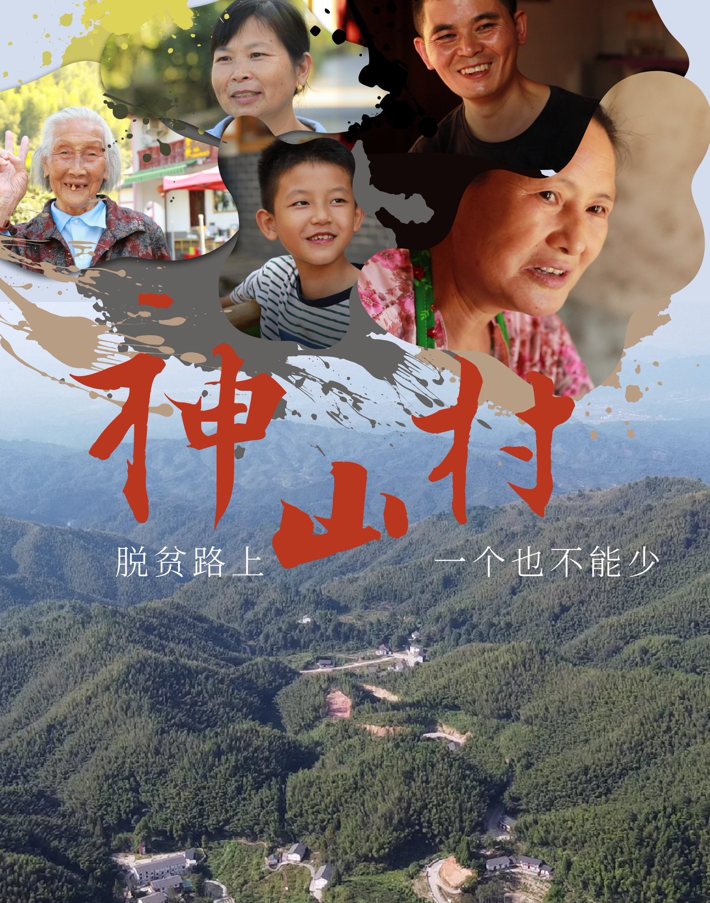
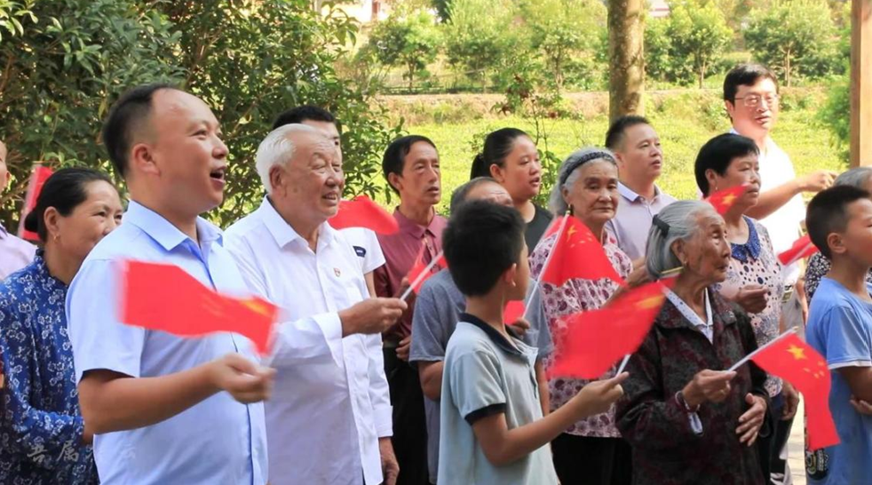
02
“腾笼换鸟 展翼何方——康鹭制衣产业转型之下从业者的迷惘与抉择”
2024/09 – 2025/06
核心成员
- 产业调研：聚焦制衣产业转型议题，完成 500 余天长线追踪、50 余次实地走访，结合 30+ 从业者深访与 354 份问卷交叉分析，输出完整产业现状研究结论
- 专业斩获：项目获 2024 年广东省科技创新战略专项（攀登计划）重点项目、2024“挑战杯”大学生课外学术科技作品竞赛校一等奖
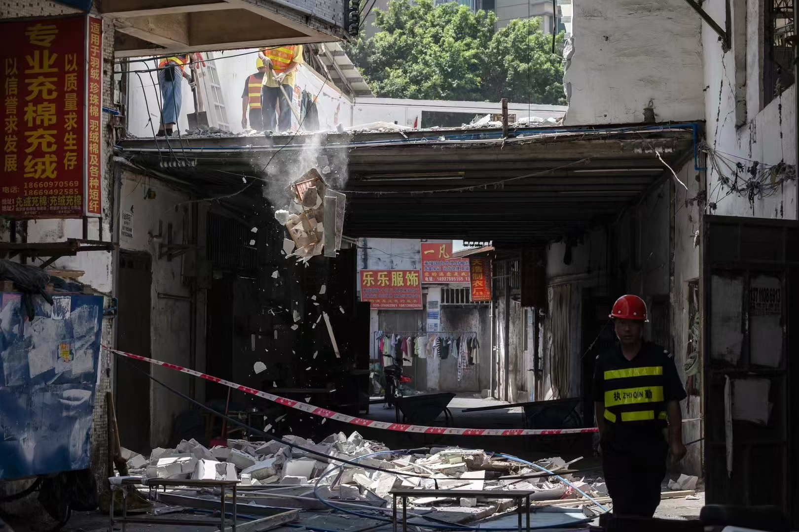
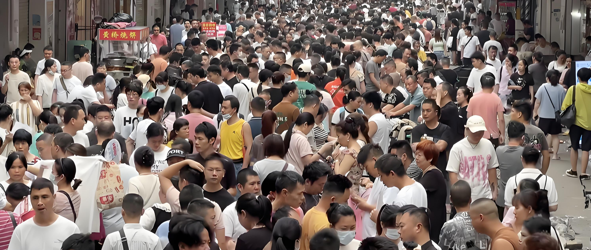
03
“暨大口传系”公众号
2020/10 – 2021/06
责任编辑
- 全链运维：负责公众号选题策划、稿件撰写、内容审核、排版优化全流程，保障稳定更新，年输出内容 40 余篇
- 栏目破局：牵头打造“人物剪影”主持人主题专栏，丰富内容矩阵，板块阅读量高出账号均值 30%，获得院系领导肯定
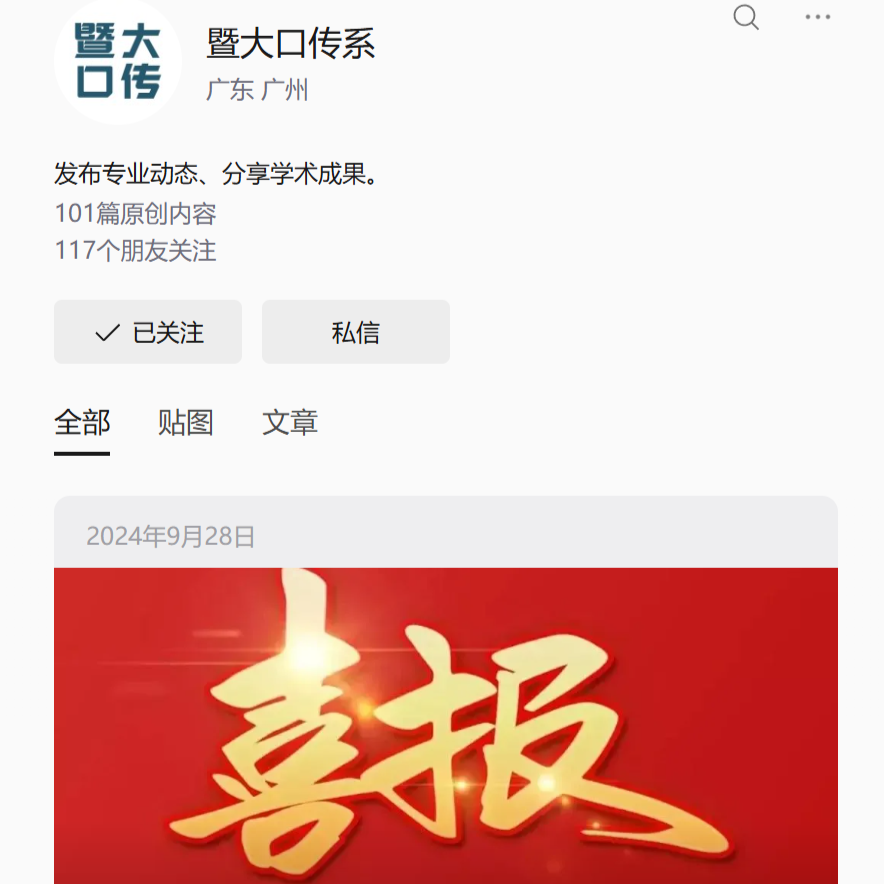
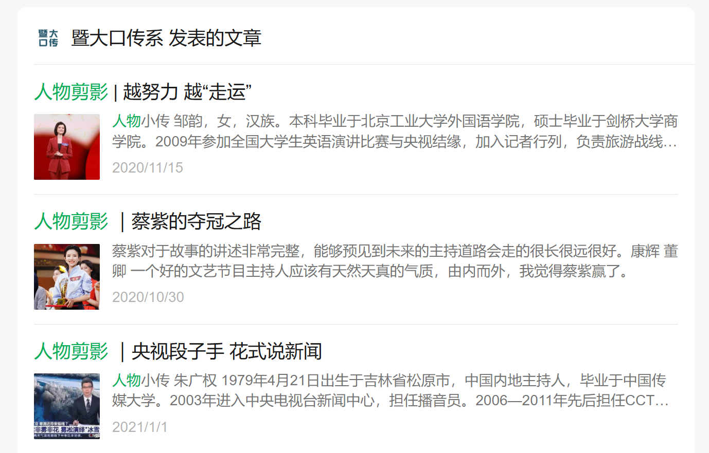
04
中国（广州）国际纪录片节 · 金红棉影展
2020/11 – 2022/01
展映志愿者
- 现场执行：全程参与第七届、第八届金红棉影展线下工作，覆盖广州、佛山多城点位，牵头负责天汇广场核心展映点全流程保障
- 对接保障：对接到场媒体与嘉宾，统筹映后交流环节现场衔接，保障活动有序推进，获评影展“优秀志愿者”
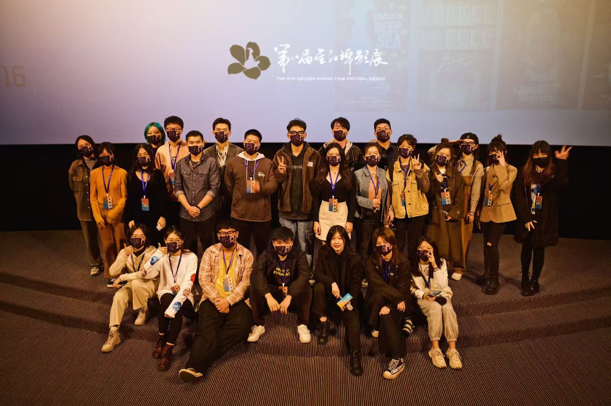
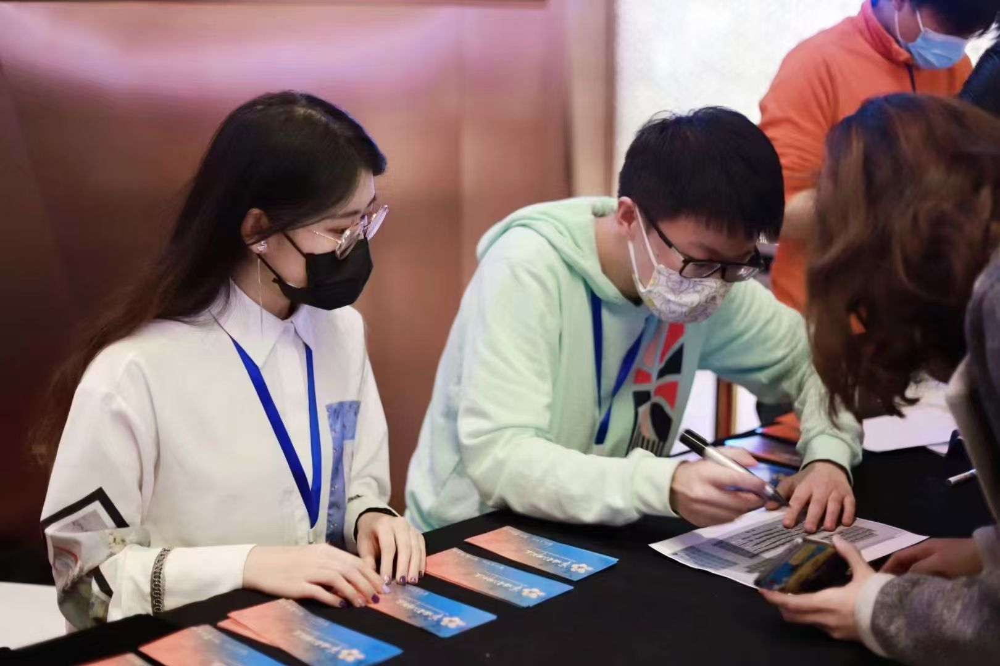
SKILLS
技能图谱
从采写编发到数据研究，从内容工具到语言表达，构建全媒体复合能力体系。
全媒体采编
数据与调研
内容工具与 AI
语言与表达
所获奖项
2022 全国大学生创新创业训练计划国家级优秀项目2022/09
2021“中国与非洲”影像作品大赛二等奖2021/10
2021 广东大中专学生暑期“三下乡”社会实践活动省级重点团队2021/09
2023“挑战杯”首都大学生课外学术科技作品竞赛主体赛道三等奖2023/07
2021 “N视频优秀创作人”2021/04
2021 中国（广州）国际纪录片节金红棉影展优秀志愿者2022/01
2024“挑战杯”大学生课外学术科技作品竞赛校一等奖2025/06
2021 暨南大学“荔枝人才奖学金”2021/12
INTERESTS
工作之外的我
保持好奇，热爱生活，用丰富的体验滋养表达与创造。
主持
播音主持科班出身，多次担任大型庆典与活动主持，用语言连接现场与受众。
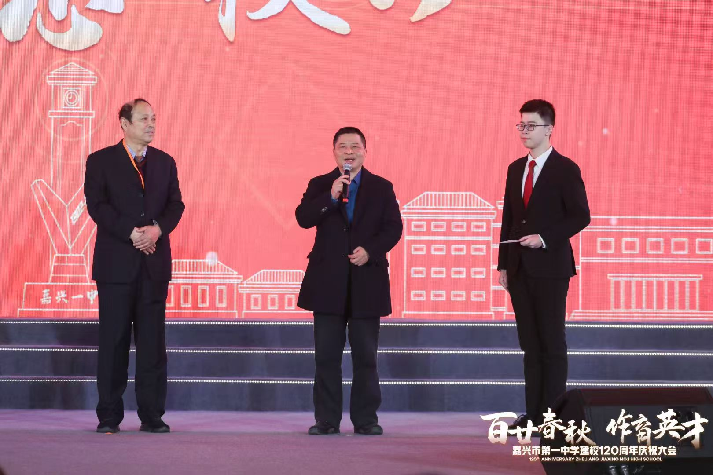
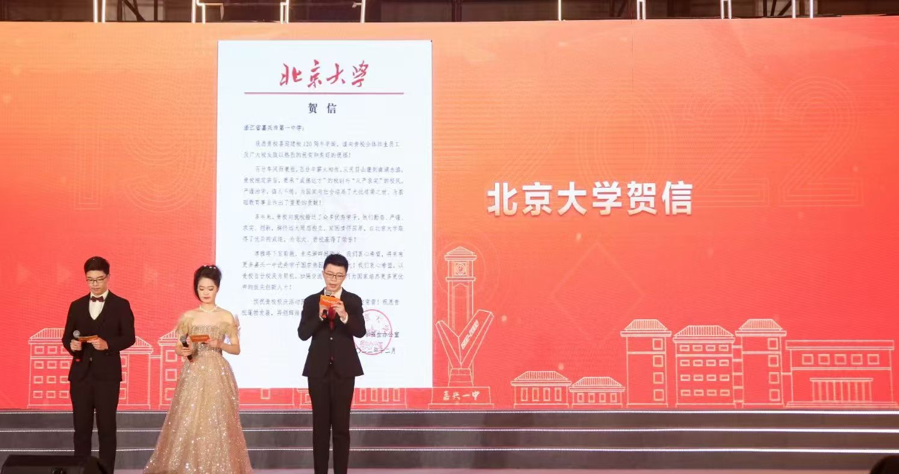
篮球
长期坚持篮球运动，在竞技对抗中磨砺专注力、协作力与抗压能力。
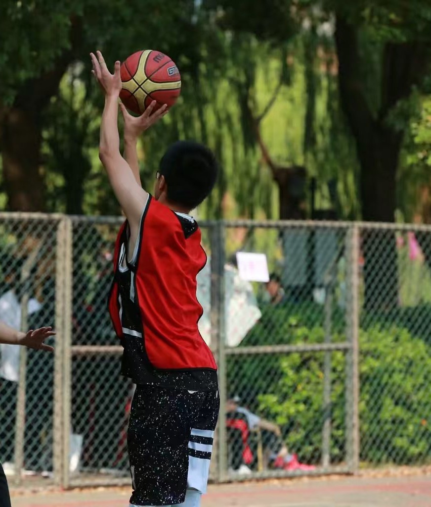
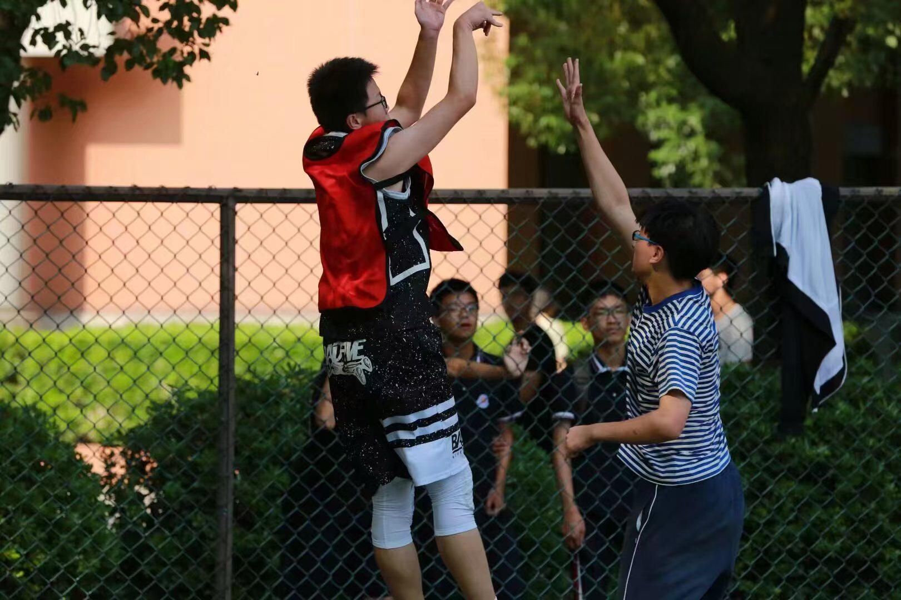
摄影
镜头是第二语言，习惯用影像记录现场与人物，与专业采制能力相互成就。
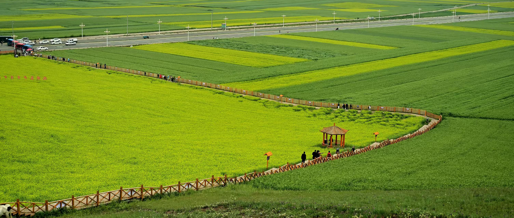
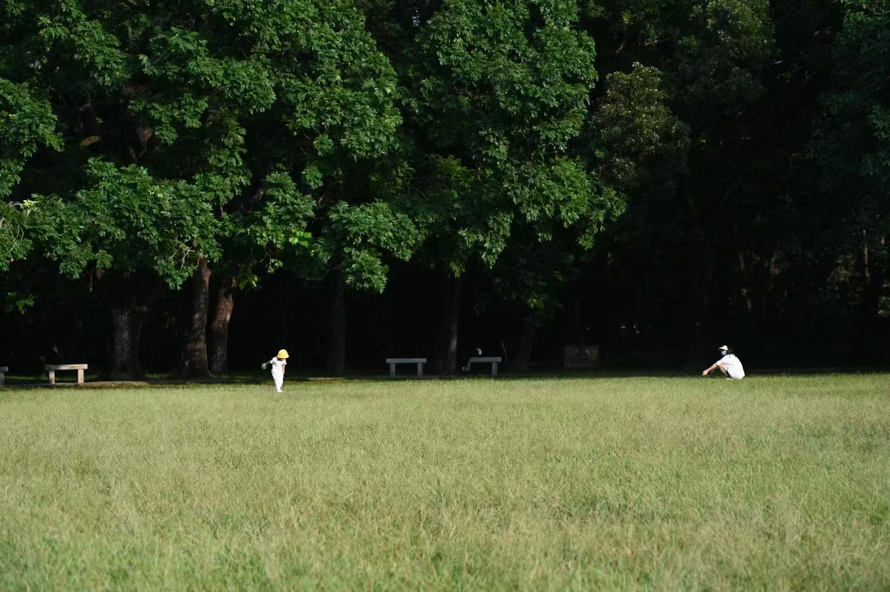
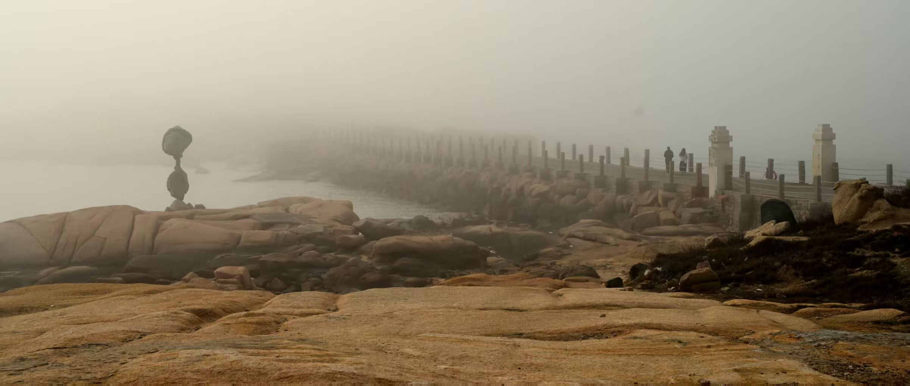